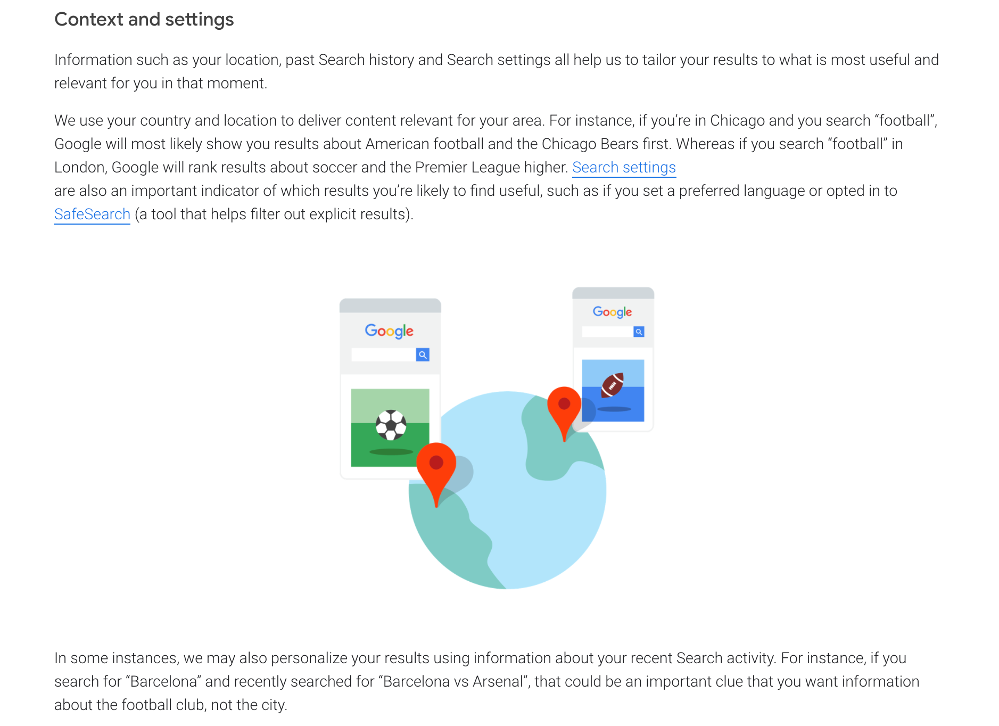

3.8 million
queries are typed into Google every minute, making it one of the primary sources
of information in the world and causing it to dominate the search engine market
WHAT'S THE ISSUE?
Today, most people rely on Google to look up information, trusting the results given to them and thinking of them as being objectively true and unbiased. However, it is imortant to remember that Google' results are not

Screenshot from Google - How Search algorithms work
SOME TERMS TO LEARN
Note: Whether Google shows evidence of bias or favoritism hasn't been officially confirmed. While Google denies any link to this kind of activity, numerous cases have been filed against them and the topic remains controversal.
- Organic search results
- Definition: In Web search engines, organic search results are the query results which are calculated strictly algorithmically, and not affected by advertiser payments. (Wikipedia: "Organic Search Results")
- SSE
- Definition: SSE refers to the way in which autocomplete search suggestions can impact a person's search for information.
- SEME
- Definition: the change in consumer preferences from manipulations of search results by search engine providers. SEME is one of the largest behavioral effects ever discovered. This includes voting preferences. A 2015 study indicated that such manipulations could shift the voting preferences of undecided voters by 20 percent or more and up to 80 percent in some demographics. (Wikipedia: "Search engine manipulation effect")
When you go to Google and type in “Climate change is,” you’re going to see different results depending on where you live. In certain cities, you’re gonna see it autocomplete with “climate change is a hoax.” In other cases, you’re gonna see “climate change is causing the destruction of nature.” And that’s a function not of what the truth is about climate change, but about where you happen to be Googling from and the particular things Google knows about your interests.
- Justin Rosenstein, "The Social Dilemma"